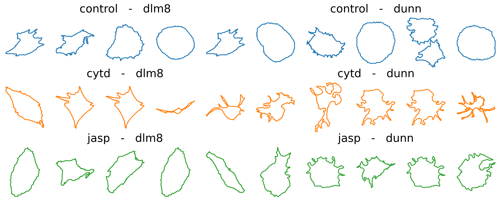

from decimal import Decimal
import matplotlib.pyplot as plt
import geomstats.backend as gs
import numpy as np
from common import *
import random
import os
import scipy.stats as stats
from sklearn import manifold
gs.random.seed(2021)This notebook is adapted from this notebook (Lead author: Nina Miolane).
This notebook studies Osteosarcoma (bone cancer) cells and the impact of drug treatment on their morphological shapes, by analyzing cell images obtained from fluorescence microscopy.
This analysis relies on the elastic metric between discrete curves from Geomstats. We will study to which extent this metric can detect how the cell shape is associated with the response to treatment.
The full papers analyzing this dataset are available at Li et al. (2023), Li et al. (2024).

Figure 1: Representative images of the cell lines using fluorescence microscopy, studied in this notebook (Image credit : Ashok Prasad). The cells nuclei (blue), the actin cytoskeleton (green) and the lipid membrane (red) of each cell are stained and colored. We only focus on the cell shape in our analysis.
1. Introduction and Motivation
Biological cells adopt a variety of shapes, determined by multiple processes and biophysical forces under the control of the cell. These shapes can be studied with different quantitative measures that reflect the cellular morphology (MGCKCKDDRTWSBCC2018). With the emergence of large-scale biological cell image data, morphological studies have many applications. For example, measures of irregularity and spreading of cells allow accurate classification and discrimination between cancer cell lines treated with different drugs (AXCFP2019).
As metrics defined on the shape space of curves, the elastic metrics (SKJJ2010) implemented in Geomstats are a potential tool for analyzing and comparing biological cell shapes. Their associated geodesics and geodesic distances provide a natural framework for optimally matching, deforming, and comparing cell shapes.
base_path = "/home/wanxinli/dyn/dyn/"
data_path = os.path.join(base_path, "datasets")
dataset_name = 'osteosarcoma'
figs_dir = os.path.join("/home/wanxinli/dyn/dyn/figs", dataset_name)
savefig = False
# If compute for the first time, we need to compute pairwise distances and run DeCOr-MDS
# Otherwise, we can just use the pre-computed results
first_time = False
if savefig:
print(f"Will save figs to {figs_dir}")2. Dataset Description
We study a dataset of mouse Osteosarcoma imaged cells (AXCFP2019). The dataset contains two different cancer cell lines : DLM8 and DUNN, respectively representing a more agressive and a less agressive cancer. Among these cells, some have also been treated with different single drugs that perturb the cellular cytoskeleton. Overall, we can label each cell according to their cell line (DLM8 and DUNN), and also if it is a control cell (no treatment), or has been treated with one of the following drugs : Jasp (jasplakinolide) and Cytd (cytochalasin D).
Each cell comes from a raw image containing a set of cells, which was thresholded to generate binarized images.

After binarizing the images, contouring was used to isolate each cell, and to extract their boundaries as a counter-clockwise ordered list of 2D coordinates, which corresponds to the representation of discrete curve in Geomstats. We load these discrete curves into the notebook.
import geomstats.datasets.utils as data_utils
cells, lines, treatments = data_utils.load_cells()
print(f"Total number of cells : {len(cells)}")Total number of cells : 650The cells are grouped by treatment class in the dataset : - the control cells, - the cells treated with Cytd, - and the ones treated with Jasp.
Additionally, in each of these classes, there are two cell lines : - the DLM8 cells, and - the DUNN ones.
Before using the dataset, we check for duplicates in the dataset.
We compute the pairwise distance between two cells. If the pairwise distance is smaller than 0.1, we visualize the corresponding cells to check they are duplicates.
tol = 1e-1
for i, cell_i in enumerate(cells):
for j, cell_j in enumerate(cells):
if i != j and cell_i.shape[0] == cell_j.shape[0]:
dist = np.sum(np.sqrt(np.sum((cell_i-cell_j)**2,axis=1)))
if dist < tol:
print(f"cell indices are: {i} and {j}, {lines[i]}, {lines[j]}, {treatments[i]}, {treatments[j]}")cell indices are: 363 and 396, dlm8, dlm8, cytd, cytd
cell indices are: 396 and 363, dlm8, dlm8, cytd, cytd
cell indices are: 513 and 519, dlm8, dlm8, jasp, jasp
cell indices are: 519 and 513, dlm8, dlm8, jasp, jasppair_indices = [363, 396]
fig = plt.figure(figsize=(10, 5))
fig.add_subplot(121)
index_0 = pair_indices[0]
plt.scatter(cells[index_0][:, 0], cells[index_0][:, 1], s=4)
plt.axis("equal")
plt.title(f"Cell {index_0}")
fig.add_subplot(122)
index_1 = pair_indices[1]
plt.scatter(cells[index_1][:, 0], cells[index_1][:, 1], s=4)
plt.axis("equal")
plt.title(f"Cell {index_1}")Text(0.5, 1.0, 'Cell 396')pair_indices = [513, 519]
fig = plt.figure(figsize=(10, 5))
fig.add_subplot(121)
index_0 = pair_indices[0]
plt.scatter(cells[index_0][:, 0], cells[index_0][:, 1], s=4)
plt.axis("equal")
plt.title(f"Cell {index_0}")
fig.add_subplot(122)
index_1 = pair_indices[1]
plt.scatter(cells[index_1][:, 0], cells[index_1][:, 1], s=4)
plt.axis("equal")
plt.title(f"Cell {index_1}")Text(0.5, 1.0, 'Cell 519')Check the category indices in order to remove corresponding cells in ds_align
delete_indices = [363, 396, 513, 519]
category_count = {}
global_count = 0
for i in range(len(cells)):
treatment = treatments[i]
line = lines[i]
if treatment not in category_count:
category_count[treatment] = {}
if line not in category_count[treatment]:
category_count[treatment][line] = 0
# if global_count in delete_indices:
# print(treatment, line, category_count[treatment][line])
category_count[treatment][line] += 1
global_count += 1Since 363th, 396th and 513th, 519th are duplicates of each other and after visualization we see they are poor quality cells with overlapping adjacent cells, we remove them from our dataset.
def remove_cells(cells, lines, treatments, delete_indices):
"""
Remove cells of control group from cells, lines and treatments
:param list[int] delete_indices: the indices to delete
"""
delete_indices = sorted(delete_indices, reverse=True) # to prevent change in index when deleting elements
# Delete elements
cells = del_arr_elements(cells, delete_indices)
lines = list(np.delete(np.array(lines), delete_indices, axis=0))
treatments = list(np.delete(np.array(treatments), delete_indices, axis=0))
return cells, lines, treatmentsdelete_indices = [363, 396, 513, 519]
cells, lines, treatments = remove_cells(cells, lines, treatments, delete_indices)
# print(len(cells), len(lines), len(treatments))This is shown by displaying the unique elements in the lists treatments and lines:
import pandas as pd
TREATMENTS = gs.unique(treatments)
print(TREATMENTS)
LINES = gs.unique(lines)
print(LINES)
METRICS = ['SRV', 'Linear']['control' 'cytd' 'jasp']
['dlm8' 'dunn']The size of each class is displayed below:
ds = {}
n_cells_arr = gs.zeros((3, 2))
for i, treatment in enumerate(TREATMENTS):
print(f"{treatment} :")
ds[treatment] = {}
for j, line in enumerate(LINES):
to_keep = gs.array(
[
one_treatment == treatment and one_line == line
for one_treatment, one_line in zip(treatments, lines)
]
)
ds[treatment][line] = [
cell_i for cell_i, to_keep_i in zip(cells, to_keep) if to_keep_i
]
nb = len(ds[treatment][line])
print(f"\t {nb} {line}")
n_cells_arr[i, j] = nb
n_cells_df = pd.DataFrame({"dlm8": n_cells_arr[:, 0], "dunn": n_cells_arr[:, 1]})
n_cells_df = n_cells_df.set_index(TREATMENTS)
display(n_cells_df)
# display(ds)control :
114 dlm8
204 dunn
cytd :
80 dlm8
93 dunn
jasp :
60 dlm8
95 dunn| dlm8 | dunn | |
|---|---|---|
| control | 114.0 | 204.0 |
| cytd | 80.0 | 93.0 |
| jasp | 60.0 | 95.0 |
We have organized the cell data into the dictionnary ds. Before proceeding to the actual data analysis, we provide an auxiliary function apply_func_to_ds.
def apply_func_to_ds(input_ds, func):
"""Apply the input function func to the input dictionnary input_ds.
This function goes through the dictionnary structure and applies
func to every cell in input_ds[treatment][line].
It stores the result in a dictionnary output_ds that is returned
to the user.
Parameters
----------
input_ds : dict
Input dictionnary, with keys treatment-line.
func : callable
Function to be applied to the values of the dictionnary, i.e.
the cells.
Returns
-------
output_ds : dict
Output dictionnary, with the same keys as input_ds.
"""
output_ds = {}
for treatment in TREATMENTS:
output_ds[treatment] = {}
for line in LINES:
output_list = []
for one_cell in input_ds[treatment][line]:
output_list.append(func(one_cell))
output_ds[treatment][line] = gs.array(output_list)
return output_dsNow we can move on to the actual data analysis, starting with a preprocessing of the cell boundaries.
3. Preprocessing
Interpolation: Encoding Discrete Curves With Same Number of Points
As we need discrete curves with the same number of sampled points to compute pairwise distances, the following interpolation is applied to each curve, after setting the number of sampling points.
To set up the number of sampling points, you can edit the following line in the next cell:
def interpolate(curve, nb_points):
"""Interpolate a discrete curve with nb_points from a discrete curve.
Returns
-------
interpolation : discrete curve with nb_points points
"""
old_length = curve.shape[0]
interpolation = gs.zeros((nb_points, 2))
incr = old_length / nb_points
pos = 0
for i in range(nb_points):
index = int(gs.floor(pos))
interpolation[i] = curve[index] + (pos - index) * (
curve[(index + 1) % old_length] - curve[index]
)
pos += incr
return interpolation
k_sampling_points = 2000To illustrate the result of this interpolation, we compare for a randomly chosen cell the original curve with the correponding interpolated one (to visualize another cell, you can simply re-run the code).
index = 0
cell_rand = cells[index]
cell_interpolation = interpolate(cell_rand, k_sampling_points)
fig = plt.figure(figsize=(15, 5))
fig.add_subplot(121)
plt.scatter(cell_rand[:, 0], cell_rand[:, 1], color='black', s=4)
plt.plot(cell_rand[:, 0], cell_rand[:, 1])
plt.axis("equal")
plt.title(f"Original curve ({len(cell_rand)} points)")
plt.axis("off")
fig.add_subplot(122)
plt.scatter(cell_interpolation[:, 0], cell_interpolation[:, 1], color='black', s=4)
plt.plot(cell_interpolation[:, 0], cell_interpolation[:, 1])
plt.axis("equal")
plt.title(f"Interpolated curve ({k_sampling_points} points)")
plt.axis("off")
if savefig:
plt.savefig(os.path.join(figs_dir, "interpolation.svg"))
plt.savefig(os.path.join(figs_dir, "interpolation.pdf"))As the interpolation is working as expected, we use the auxiliary function apply_func_to_ds to apply the function func=interpolate to the dataset ds, i.e. the dictionnary containing the cells boundaries.
We obtain a new dictionnary, ds_interp, with the interpolated cell boundaries.
ds_interp = apply_func_to_ds(
input_ds=ds, func=lambda x: interpolate(x, k_sampling_points)
)The shape of an array of cells in ds_interp[treatment][cell] is therefore: ("number of cells in treatment-line", "number of sampling points", 2), where 2 refers to the fact that we are considering cell shapes in 2D.
Visualization of Interpolated Dataset of Curves
We visualize the curves obtained, for a sample of control cells and treated cells (top row shows control, i.e. non-treated cells; bottom rows shows treated cells) across cell lines (left and blue for dlm8 and right and orange for dunn).
n_cells_to_plot = 5
# radius = 800
fig = plt.figure(figsize=(16, 6))
count = 1
for i, treatment in enumerate(TREATMENTS):
for line in LINES:
cell_data = ds_interp[treatment][line]
for i_to_plot in range(n_cells_to_plot):
cell = gs.random.choice(cell_data)
fig.add_subplot(3, 2 * n_cells_to_plot, count)
count += 1
plt.plot(cell[:, 0], cell[:, 1], color="C" + str(i))
# plt.xlim(-radius, radius)
# plt.ylim(-radius, radius)
plt.axis("equal")
plt.axis("off")
if i_to_plot == n_cells_to_plot // 2:
plt.title(f"{treatment} - {line}", fontsize=20)
if savefig:
plt.savefig(os.path.join(figs_dir, "sample_cells.svg"))
plt.savefig(os.path.join(figs_dir, "sample_cells.pdf"))
Visual inspection of these curves seems to indicate more protusions appearing in treated cells, compared with control ones. This is in agreement with the physiological impact of the drugs, which are known to perturb the internal cytoskeleton connected to the cell membrane. Using the elastic metric, our goal will be to see if we can quantitatively confirm these differences.
Remove duplicate sample points in curves
During interpolation it is likely that some of the discrete curves in the dataset are downsampled from higher number of discrete data points to lower number of data points. Hence, two sampled data points that are close enough may end up overlapping after interpolation and hence such data points have to be dealt with specifically.
import numpy as np
def preprocess(curve, tol=1e-10):
"""Preprocess curve to ensure that there are no consecutive duplicate points.
Returns
-------
curve : discrete curve
"""
dist = curve[1:] - curve[:-1]
dist_norm = np.sqrt(np.sum(np.square(dist), axis=1))
if np.any( dist_norm < tol ):
for i in range(len(curve)-1):
if np.sqrt(np.sum(np.square(curve[i+1] - curve[i]), axis=0)) < tol:
curve[i+1] = (curve[i] + curve[i+2]) / 2
return curveds_proc = apply_func_to_ds(ds_interp, func=lambda x: preprocess(x))Check we did not loss any cells after duplicates
for treatment in TREATMENTS:
for line in LINES:
for metric in METRICS:
print(f"{treatment} and {line} using {metric}: {len(ds_proc[treatment][line])}")control and dlm8 using SRV: 114
control and dlm8 using Linear: 114
control and dunn using SRV: 204
control and dunn using Linear: 204
cytd and dlm8 using SRV: 80
cytd and dlm8 using Linear: 80
cytd and dunn using SRV: 93
cytd and dunn using Linear: 93
jasp and dlm8 using SRV: 60
jasp and dlm8 using Linear: 60
jasp and dunn using SRV: 95
jasp and dunn using Linear: 95Alignment
Our goal is to study the cell boundaries in our dataset, as points in a shape space of closed curves quotiented by translation, scaling, and rotation, so these transformations do not affect our measure of distance between curves.
In practice, we apply functions that were initially designed to center (substract the barycenter), rescale (divide by the Frobenius norm) and then reparameterize (only for SRV metric).
Since the alignment procedure takes 30 minutes, we ran osteosarocoma_align.py and saved the results in ~/dyn/datasets/osteosarcoma/aligned
Load aligned cells from txt files. These files were generated by calling align function in common.py.
We get the aligned cells from preprocessed dataset.
Furthermore, we align the barycenters of the cells to the barycenter of the projected base curve, and (optionally) flip the cell.
def align_barycenter(cell, centroid_x, centroid_y, flip):
"""
Align the the barycenter of the cell to ref centeriod and flip the cell against the xaxis of the centriod if flip is True.
:param 2D np array cell: cell to align
:param float centroid_x: the x coordinates of the projected BASE_CURVE
:param float centroid_y: the y coordinates of the projected BASE_CURVE
:param bool flip: flip the cell against x = centroid x if True
"""
cell_bc = np.mean(cell, axis=0)
aligned_cell = cell+[centroid_x, centroid_y]-cell_bc
if flip:
aligned_cell[:, 0] = 2*centroid_x-aligned_cell[:, 0]
# Flip the order of the points
med_index = int(np.floor(aligned_cell.shape[0]/2))
flipped_aligned_cell = np.concatenate((aligned_cell[med_index:], aligned_cell[:med_index]), axis=0)
flipped_aligned_cell = np.flipud(flipped_aligned_cell)
aligned_cell = flipped_aligned_cell
return aligned_cell
def get_centroid(base_curve):
total_space = DiscreteCurvesStartingAtOrigin(k_sampling_points=k_sampling_points)
proj_base_curve = total_space.projection(base_curve)
base_centroid = np.mean(proj_base_curve, axis=0)
return base_centroid[0], base_centroid[1]delete_indices = [363, 396, 513, 519]
aligned_base_folder = os.path.join(data_path, dataset_name, "aligned")
BASE_CURVE = generate_ellipse(k_sampling_points)
centroid_x, centroid_y = get_centroid(BASE_CURVE)
ds_align = {}
for metric in METRICS:
ds_align[metric] = {}
if metric == 'SRV':
aligned_folder = os.path.join(aligned_base_folder, 'projection_rescale_rotation_reparameterization')
elif metric == 'Linear':
aligned_folder = os.path.join(aligned_base_folder, 'projection_rescale_rotation_reparameterization')
for treatment in TREATMENTS:
ds_align[metric][treatment] = {}
for line in LINES:
ds_align[metric][treatment][line] = []
cell_num = len(ds_proc[treatment][line])
if line == 'dlm8' and (treatment == 'cytd' or treatment == 'jasp'):
cell_num += 2
for i in range(cell_num):
# Do not load duplicate cells
# cytd dlm8 45
# cytd dlm8 78
# jasp dlm8 20
# jasp dlm8 26
if (treatment == 'cytd' and line == 'dlm8' and (i == 45 or i == 78)) or \
(treatment == 'jasp' and line == 'dlm8' and (i == 20 or i == 26)):
continue
file_path = os.path.join(aligned_folder, f"{treatment}_{line}_{i}.txt")
if os.path.exists(file_path):
cell = np.loadtxt(file_path)
ds_align[metric][treatment][line].append(cell)Check we did not loss any cells after alignment
for treatment in TREATMENTS:
for line in LINES:
for metric in METRICS:
print(f"{treatment} and {line} using {metric}: {len(ds_align[metric][treatment][line])}")control and dlm8 using SRV: 113
control and dlm8 using Linear: 113
control and dunn using SRV: 199
control and dunn using Linear: 199
cytd and dlm8 using SRV: 74
cytd and dlm8 using Linear: 74
cytd and dunn using SRV: 92
cytd and dunn using Linear: 92
jasp and dlm8 using SRV: 56
jasp and dlm8 using Linear: 56
jasp and dunn using SRV: 91
jasp and dunn using Linear: 91Update lines and treatments
treatments = []
lines = []
for treatment in TREATMENTS:
for line in LINES:
treatments.extend([treatment]*len(ds_align['SRV'][treatment][line]))
lines.extend([line]*len(ds_align['SRV'][treatment][line]))
treatments = np.array(treatments)
lines = np.array(lines)
print("treatment length is:", len(treatments), "lines length is:", len(lines))treatment length is: 625 lines length is: 625Visualize reference cell, unaligned cell and aligned cell.
index = 0
metric = 'SRV'
unaligned_cell = ds_proc["control"]["dlm8"][index]
aligned_cell = ds_align[metric]["control"]["dlm8"][index]
first_round_aligned_folder = os.path.join(aligned_base_folder, 'projection_rescale_rotation_reparameterization_first_round')
reference_path = os.path.join(first_round_aligned_folder, f"reference.txt")
mean_first_round = np.loadtxt(reference_path)
fig = plt.figure(figsize=(15, 5))
fig.add_subplot(131)
plt.plot(mean_first_round[:, 0], mean_first_round[:, 1])
plt.plot([mean_first_round[-1, 0], mean_first_round[0, 0]], [mean_first_round[-1, 1], mean_first_round[0, 1]], 'tab:blue')
plt.scatter(mean_first_round[:, 0], mean_first_round[:, 1], s=4, c='black')
plt.plot(mean_first_round[0, 0], mean_first_round[0, 1], "ro")
plt.axis("equal")
plt.title("Reference curve")
fig.add_subplot(132)
plt.plot(unaligned_cell[:, 0], unaligned_cell[:, 1])
plt.scatter(unaligned_cell[:, 0], unaligned_cell[:, 1], s=4, c='black')
plt.plot(unaligned_cell[0, 0], unaligned_cell[0, 1], "ro")
plt.axis("equal")
plt.title("Unaligned curve")
fig.add_subplot(133)
plt.plot(aligned_cell[:, 0], aligned_cell[:, 1])
plt.scatter(aligned_cell[:, 0], aligned_cell[:, 1], s=4, c='black')
plt.plot(aligned_cell[0, 0], aligned_cell[0, 1], "ro")
plt.axis("equal")
plt.title("Aligned curve")
if savefig:
plt.savefig(os.path.join(figs_dir, "alignment.svg"))
plt.savefig(os.path.join(figs_dir, "alignment.pdf"))In the plot above, the red dot shows the start of the parametrization of each curve. The right curve has been rotated from the curve in the middle, to be aligned with the left (reference) curve, which represents the first cell of the dataset. The starting point (in red) of this right curve has been also set to align with the reference.
4 Data Analysis
Compute Mean Cell Shape of the Whole Dataset: “Global” Mean Shape
We want to compute the mean cell shape of the whole dataset. Thus, we first combine all the cell shape data into a single array.
CURVES_SPACE_SRV = DiscreteCurvesStartingAtOrigin(ambient_dim=2, k_sampling_points=k_sampling_points)cell_shapes_list = {}
for metric in METRICS:
cell_shapes_list[metric] = []
for treatment in TREATMENTS:
for line in LINES:
cell_shapes_list[metric].extend(ds_align[metric][treatment][line])
cell_shapes = {}
for metric in METRICS:
cell_shapes[metric] = gs.array(cell_shapes_list[metric])
print(cell_shapes['SRV'].shape)(625, 1999, 2)Remove outliers using DeCOr-MDS, together for DUNN and DLM8 cell lines.
def linear_dist(cell1, cell2):
return gs.linalg.norm(cell1 - cell2)
def srv_dist(cell1, cell2):
CURVES_SPACE_SRV.equip_with_metric(SRVMetric)
return CURVES_SPACE_SRV.metric.dist(cell1, cell2)
# compute pairwise distances, we only need to compute it once and save the results
pairwise_dists = {}
if first_time:
metric = 'SRV'
pairwise_dists[metric] = parallel_dist(cell_shapes[metric], srv_dist, k_sampling_points)
metric = 'Linear'
pairwise_dists[metric] = parallel_dist(cell_shapes[metric], linear_dist, k_sampling_points)
for metric in METRICS:
np.savetxt(os.path.join(data_path, dataset_name, "distance_matrix", f"{metric}_matrix.txt"), pairwise_dists[metric])
else:
for metric in METRICS:
pairwise_dists[metric] = np.loadtxt(os.path.join(data_path, dataset_name, "distance_matrix", f"{metric}_matrix.txt"))# to remove 132 and 199
one_cell = cell_shapes['Linear'][199]
plt.plot(one_cell[:, 0], one_cell[:, 1], c=f"gray")# run DeCOr-MDS
metric = 'SRV'
dim_start = 2 # we know the subspace dimension is 3, we set start and end to 3 to reduce runtime
dim_end = 10
# dim_start = 3
# dim_end = 3
std_multi = 1
if first_time:
subspace_dim, outlier_indices = find_subspace_dim(pairwise_dists[metric], dim_start, dim_end, std_multi)
print(f"subspace dimension is: {subspace_dim}")
print(f"outlier_indices are: {outlier_indices}")Visualize outlier cells to see if they are artifacts
if first_time:
fig, axes = plt.subplots(
nrows= 1,
ncols=len(outlier_indices),
figsize=(2*len(outlier_indices), 2),
)
for i, outlier_index in enumerate(outlier_indices):
one_cell = cell_shapes[metric][outlier_index]
ax = axes[i]
ax.plot(one_cell[:, 0], one_cell[:, 1], c=f"C{j}")
ax.set_title(f"{outlier_index}", fontsize=14)
# Turn off tick labels
ax.set_yticklabels([])
ax.set_xticklabels([])
ax.set_xticks([])
ax.set_yticks([])
ax.spines["top"].set_visible(False)
ax.spines["right"].set_visible(False)
ax.spines["bottom"].set_visible(False)
ax.spines["left"].set_visible(False)
plt.tight_layout()
plt.suptitle(f"", y=-0.01, fontsize=24)
# plt.savefig(os.path.join(figs_dir, "outlier.svg"))delete_indices = [132, 199]
fig, axes = plt.subplots(
nrows= 1,
ncols=len(delete_indices),
figsize=(2*len(delete_indices), 2),
)
for i, outlier_index in enumerate(delete_indices):
one_cell = cell_shapes[metric][outlier_index]
ax = axes[i]
ax.plot(one_cell[:, 0], one_cell[:, 1], c=f"gray")
ax.set_title(f"{outlier_index}", fontsize=14)
# ax.axis("off")
# Turn off tick labels
ax.set_yticklabels([])
ax.set_xticklabels([])
ax.set_xticks([])
ax.set_yticks([])
ax.spines["top"].set_visible(False)
ax.spines["right"].set_visible(False)
ax.spines["bottom"].set_visible(False)
ax.spines["left"].set_visible(False)
plt.tight_layout()
plt.suptitle(f"", y=-0.01, fontsize=24)
if savefig:
plt.savefig(os.path.join(figs_dir, "delete_outlier.svg"))
plt.savefig(os.path.join(figs_dir, "delete_outlier.pdf"))After visual inspection, we decide to remove the outlier cells
def remove_ds_two_layer(ds, delete_indices):
global_i = sum(len(v) for values in ds.values() for v in values.values())-1
for treatment in reversed(list(ds.keys())):
treatment_values = ds[treatment]
for line in reversed(list(treatment_values.keys())):
line_cells = treatment_values[line]
for i, _ in reversed(list(enumerate(line_cells))):
if global_i in delete_indices:
print(np.array(ds[treatment][line][:i]).shape, np.array(ds[treatment][line][i+1:]).shape)
if len(np.array(ds[treatment][line][:i]).shape) == 1:
ds[treatment][line] = np.array(ds[treatment][line][i+1:])
elif len(np.array(ds[treatment][line][i+1:]).shape) == 1:
ds[treatment][line] = np.array(ds[treatment][line][:i])
else:
ds[treatment][line] = np.concatenate((np.array(ds[treatment][line][:i]), np.array(ds[treatment][line][i+1:])), axis=0)
global_i -= 1
return ds
def remove_cells_two_layer(cells, cell_shapes, lines, treatments, pairwise_dists, ds_proc, ds_align, delete_indices):
"""
Remove cells of control group from cells, cell_shapes, ds,
the parameters returned from load_treated_osteosarcoma_cells
Also update n_cells
:param list[int] delete_indices: the indices to delete
"""
delete_indices = sorted(delete_indices, reverse=True) # to prevent change in index when deleting elements
# Delete elements
cells = del_arr_elements(cells, delete_indices)
lines = list(np.delete(np.array(lines), delete_indices, axis=0))
treatments = list(np.delete(np.array(treatments), delete_indices, axis=0))
ds_proc = remove_ds_two_layer(ds_proc, delete_indices)
for metric in METRICS:
cell_shapes[metric] = np.delete(np.array(cell_shapes[metric]), delete_indices, axis=0)
ds_align[metric] = remove_ds_two_layer(ds_align[metric], delete_indices)
pairwise_dists[metric] = np.delete(pairwise_dists[metric], delete_indices, axis=0)
pairwise_dists[metric] = np.delete(pairwise_dists[metric], delete_indices, axis=1)
return cells, cell_shapes, lines, treatments, pairwise_dists, ds_proc, ds_aligncells, cell_shapes, lines, treatments, pairwise_dists, ds_proc, ds_align = remove_cells_two_layer(cells, cell_shapes, lines, treatments, pairwise_dists, ds_proc, ds_align, delete_indices)(85, 2000, 2) (118, 2000, 2)
(18, 2000, 2) (184, 2000, 2)
(86, 1999, 2) (112, 1999, 2)
(19, 1999, 2) (178, 1999, 2)
(86, 1999, 2) (112, 1999, 2)
(19, 1999, 2) (178, 1999, 2)Check we did not loss any other cells after the removal
def check_num(cell_shapes, treatments, lines, pairwise_dists, ds_align):
print(f"treatments number is: {len(treatments)}, lines number is: {len(lines)}")
for metric in METRICS:
print(f"pairwise_dists for {metric} shape is: {pairwise_dists[metric].shape}")
print(f"cell_shapes for {metric} number is : {len(cell_shapes[metric])}")
for line in LINES:
for treatment in TREATMENTS:
print(f"ds_align {treatment} {line} using {metric}: {len(ds_align[metric][treatment][line])}")check_num(cell_shapes, treatments, lines, pairwise_dists, ds_align)treatments number is: 623, lines number is: 623
pairwise_dists for SRV shape is: (623, 623)
cell_shapes for SRV number is : 623
ds_align control dlm8 using SRV: 113
ds_align cytd dlm8 using SRV: 74
ds_align jasp dlm8 using SRV: 56
ds_align control dunn using SRV: 197
ds_align cytd dunn using SRV: 92
ds_align jasp dunn using SRV: 91
pairwise_dists for Linear shape is: (623, 623)
cell_shapes for Linear number is : 623
ds_align control dlm8 using Linear: 113
ds_align cytd dlm8 using Linear: 74
ds_align jasp dlm8 using Linear: 56
ds_align control dunn using Linear: 197
ds_align cytd dunn using Linear: 92
ds_align jasp dunn using Linear: 91We compute the mean cell shape by using the SRV metric defined on the space of curves’ shapes. The space of curves’ shape is a manifold: we use the Frechet mean, associated to the SRV metric, to get the mean cell shape.
Do not include cells with duplicate points when calculating the mean shapes
def check_duplicate(cell):
"""
Return true if there are duplicate points in the cell
"""
for i in range(cell.shape[0]-1):
cur_coord = cell[i]
next_coord = cell[i+1]
if np.linalg.norm(cur_coord-next_coord) == 0:
return True
# Checking the last point vs the first poit
if np.linalg.norm(cell[-1]-cell[0]) == 0:
return True
return Falsedelete_indices = []
for metric in METRICS:
for i, cell in reversed(list(enumerate(cell_shapes[metric]))):
if check_duplicate(cell):
if i not in delete_indices:
delete_indices.append(i)
cells, cell_shapes, lines, treatments, pairwise_dists, ds_proc, ds_align = \
remove_cells_two_layer(cells, cell_shapes, lines, treatments, pairwise_dists, ds_proc, ds_align, delete_indices)Recheck cell number after removing cells with duplicated points
check_num(cell_shapes, treatments, lines, pairwise_dists, ds_align)treatments number is: 623, lines number is: 623
pairwise_dists for SRV shape is: (623, 623)
cell_shapes for SRV number is : 623
ds_align control dlm8 using SRV: 113
ds_align cytd dlm8 using SRV: 74
ds_align jasp dlm8 using SRV: 56
ds_align control dunn using SRV: 197
ds_align cytd dunn using SRV: 92
ds_align jasp dunn using SRV: 91
pairwise_dists for Linear shape is: (623, 623)
cell_shapes for Linear number is : 623
ds_align control dlm8 using Linear: 113
ds_align cytd dlm8 using Linear: 74
ds_align jasp dlm8 using Linear: 56
ds_align control dunn using Linear: 197
ds_align cytd dunn using Linear: 92
ds_align jasp dunn using Linear: 91from geomstats.learning.frechet_mean import FrechetMean
metric = 'SRV'
CURVES_SPACE_SRV = DiscreteCurvesStartingAtOrigin(ambient_dim=2, k_sampling_points=k_sampling_points)
mean = FrechetMean(CURVES_SPACE_SRV)
print(cell_shapes[metric].shape)
cells = cell_shapes[metric]
mean.fit(cells)
mean_estimate = mean.estimate_(623, 1999, 2)mean_estimate_aligned = {}
mean_estimate_clean = mean_estimate[~gs.isnan(gs.sum(mean_estimate, axis=1)), :]
mean_estimate_aligned[metric] = (
mean_estimate_clean - gs.mean(mean_estimate_clean, axis=0)
)Also we compute the linear mean
metric = 'Linear'
linear_mean_estimate = gs.mean(cell_shapes[metric], axis=0)
linear_mean_estimate_clean = linear_mean_estimate[~gs.isnan(gs.sum(linear_mean_estimate, axis=1)), :]
mean_estimate_aligned[metric] = (
linear_mean_estimate_clean - gs.mean(linear_mean_estimate_clean, axis=0)
)Plot SRV mean cell versus linear mean cell
fig = plt.figure(figsize=(6, 3))
fig.add_subplot(121)
metric = 'SRV'
plt.plot(mean_estimate_aligned[metric][:, 0], mean_estimate_aligned[metric][:, 1])
plt.axis("equal")
plt.title("SRV")
plt.axis("off")
fig.add_subplot(122)
metric = 'Linear'
plt.plot(mean_estimate_aligned[metric][:, 0], mean_estimate_aligned[metric][:, 1])
plt.axis("equal")
plt.title("Linear")
plt.axis("off")
if savefig:
plt.savefig(os.path.join(figs_dir, "global_mean.svg"))
plt.savefig(os.path.join(figs_dir, "global_mean.pdf"))Analyze Distances to the “Global” Mean Shape
We consider each of the subgroups of cells, defined by their treatment and cell line. We wish to study how far each of this group is from the global mean shape. We compute the list of distances to the global mean shape.
metric = 'SRV'
dists_to_global_mean = {}
dists_to_global_mean_list = {}
print(mean_estimate_aligned[metric].shape)
dists_to_global_mean[metric] = apply_func_to_ds(
ds_align[metric],
func=lambda x: CURVES_SPACE_SRV.metric.dist(x, mean_estimate_aligned[metric])
)
dists_to_global_mean_list[metric] = []
for t in TREATMENTS:
for l in LINES:
dists_to_global_mean_list[metric].extend(dists_to_global_mean[metric][t][l])(1999, 2)Compute distances to linear mean
metric = 'Linear'
dists_to_global_mean[metric] = apply_func_to_ds(
ds_align[metric], func=lambda x: gs.linalg.norm(mean_estimate_aligned[metric] - x)
)
dists_to_global_mean_list[metric] = []
for t in TREATMENTS:
for l in LINES:
dists_to_global_mean_list[metric].extend(dists_to_global_mean[metric][t][l])fig, axs = plt.subplots(1, 2, sharex=False, sharey=False, tight_layout=True, figsize=(8, 4))
line = 'dlm8'
kde_dict = {}
for j, metric in enumerate(METRICS):
distances = []
min_dists = min(dists_to_global_mean_list[metric])
max_dists = max(dists_to_global_mean_list[metric])
xx = gs.linspace(gs.floor(min_dists), gs.ceil(max_dists), k_sampling_points)
kde_dict[metric] = {}
for i, treatment in enumerate(TREATMENTS):
distances = dists_to_global_mean[metric][treatment][line][~gs.isnan(dists_to_global_mean[metric][treatment][line])]
axs[j].hist(distances, bins=20, alpha=0.4, density=True, label=treatment, color=f"C{i}")
kde = stats.gaussian_kde(distances)
kde_dict[metric][treatment] = kde
axs[j].plot(xx, kde(xx), color=f"C{i}")
axs[j].set_xlim((min_dists, max_dists))
axs[j].legend(fontsize=12)
axs[j].set_title(f"{metric}", fontsize=14)
axs[j].set_ylabel("Fraction of cells", fontsize=14)
# fig.suptitle("Histograms of SRV distances to global mean cell", fontsize=20)
if savefig:
plt.savefig(os.path.join(figs_dir, f"{line}_histogram.svg"))
plt.savefig(os.path.join(figs_dir, f"{line}_histogram.pdf"))Calculate the ratio of overlapping regions formed by the kde curves
def calc_ratio(kde1, kde2, min, max):
xx = np.linspace(min, max, 1000)
kde1_values = kde1(xx)
kde2_values = kde2(xx)
overlap = np.minimum(kde1_values, kde2_values)
overlap_area = np.trapz(overlap, xx)
bound = np.maximum(kde1_values, kde2_values)
bound_area = np.trapz(bound, xx)
return overlap_area/bound_areafor metric in METRICS:
min_dists = min(dists_to_global_mean_list[metric])
max_dists = max(dists_to_global_mean_list[metric])
for i, tmt1 in enumerate(TREATMENTS):
for j in range(i+1, len(TREATMENTS)):
tmt2 = TREATMENTS[j]
ratio = calc_ratio(kde_dict[metric][tmt1], kde_dict[metric][tmt2], min_dists, max_dists)
print(f"Overlap ratio for {line} between {tmt1} and {tmt2} using {metric} metric is: {round(ratio, 2)}")Overlap ratio for dlm8 between control and cytd using SRV metric is: 0.28
Overlap ratio for dlm8 between control and jasp using SRV metric is: 0.53
Overlap ratio for dlm8 between cytd and jasp using SRV metric is: 0.39
Overlap ratio for dlm8 between control and cytd using Linear metric is: 0.43
Overlap ratio for dlm8 between control and jasp using Linear metric is: 0.69
Overlap ratio for dlm8 between cytd and jasp using Linear metric is: 0.59fig, axs = plt.subplots(1, 2, sharex=False, sharey=False, tight_layout=True, figsize=(8, 4))
line = 'dunn'
np.set_printoptions(precision=12)
kde_dict = {}
for j, metric in enumerate(METRICS):
distances = []
min_dists = min(dists_to_global_mean_list[metric])
max_dists = max(dists_to_global_mean_list[metric])
xx = gs.linspace(gs.floor(min_dists), gs.ceil(max_dists), k_sampling_points)
kde_dict[metric] = {}
for i, treatment in enumerate(TREATMENTS):
distances = dists_to_global_mean[metric][treatment][line][~gs.isnan(dists_to_global_mean[metric][treatment][line])]
counts, bin_edges, _ = axs[j].hist(distances, bins=20, alpha=0.4, density=True, label=treatment, color=f"C{i}")
print(treatment, metric)
print("counts are:", counts)
print("bin_edges are:", bin_edges)
kde = stats.gaussian_kde(distances)
kde_dict[metric][treatment] = kde
axs[j].plot(xx, kde(xx), color=f"C{i}")
axs[j].set_xlim((min_dists, max_dists))
axs[j].legend(fontsize=12)
axs[j].set_title(f"{metric}", fontsize=14)
axs[j].set_ylabel("Fraction of cells", fontsize=14)
# fig.suptitle("Histograms of SRV distances to global mean cell", fontsize=20)
if savefig:
plt.savefig(os.path.join(figs_dir, f"{line}_histogram.svg"))
plt.savefig(os.path.join(figs_dir, f"{line}_histogram.pdf"))control SRV
counts are: [3.599823688084 9.414923491911 9.138013977443 2.492185630212
2.215276115744 2.215276115744 2.492185630212 4.15364271702
6.092009318296 3.876733202552 2.492185630212 1.38454757234
1.107638057872 2.492185630212 0.553819028936 0.
0.553819028936 0. 0. 0.276909514468]
bin_edges are: [0.190412844846 0.208744255891 0.227075666936 0.245407077981
0.263738489026 0.28206990007 0.300401311115 0.31873272216
0.337064133205 0.35539554425 0.373726955295 0.39205836634
0.410389777385 0.42872118843 0.447052599475 0.46538401052
0.483715421565 0.50204683261 0.520378243655 0.5387096547
0.557041065745]
cytd SRV
counts are: [0.627751614862 0. 1.883254844586 1.255503229724
1.255503229724 1.255503229724 1.883254844586 5.649764533759
4.394261304035 5.649764533759 8.160770993208 5.649764533759
6.905267763483 3.138758074311 2.511006459448 1.255503229724
3.138758074311 1.883254844586 0.627751614862 0.627751614862]
bin_edges are: [0.26221861859 0.279533691877 0.296848765164 0.314163838451
0.331478911738 0.348793985025 0.366109058312 0.383424131599
0.400739204886 0.418054278173 0.43536935146 0.452684424747
0.469999498034 0.487314571321 0.504629644608 0.521944717895
0.539259791183 0.55657486447 0.573889937757 0.591205011044
0.608520084331]
jasp SRV
counts are: [0.928427307436 0.928427307436 0.928427307436 2.785281922307
3.713709229743 3.713709229743 4.642136537178 6.49899115205
6.49899115205 6.49899115205 9.284273074357 8.355845766921
6.49899115205 7.427418459485 2.785281922307 4.642136537178
1.856854614871 2.785281922307 1.856854614871 1.856854614871]
bin_edges are: [0.244313646946 0.256149803531 0.267985960117 0.279822116702
0.291658273288 0.303494429873 0.315330586458 0.327166743044
0.339002899629 0.350839056215 0.3626752128 0.374511369386
0.386347525971 0.398183682557 0.410019839142 0.421855995727
0.433692152313 0.445528308898 0.457364465484 0.469200622069
0.481036778655]
control Linear
counts are: [0.973976940289 1.704459645506 3.895907761156 3.165425055939
4.626390466373 4.139401996228 5.35687317159 5.843861641734
4.626390466373 3.408919291012 2.19144811565 2.678436585795
1.460965410434 0.730482705217 0.973976940289 0.243494235072
0.730482705217 0. 0.243494235072 0.973976940289]
bin_edges are: [0.084550020208 0.105397093366 0.126244166523 0.147091239681
0.167938312838 0.188785385996 0.209632459153 0.230479532311
0.251326605468 0.272173678626 0.293020751783 0.313867824941
0.334714898098 0.355561971256 0.376409044413 0.397256117571
0.418103190728 0.438950263886 0.459797337043 0.480644410201
0.501491483358]
cytd Linear
counts are: [2.686991765509 1.343495882754 1.791327843673 2.239159804591
2.686991765509 3.582655687345 4.478319609181 4.478319609181
5.821815491936 4.030487648263 4.030487648263 1.343495882754
1.343495882754 0.447831960918 0. 0.
0.447831960918 0. 0. 0.447831960918]
bin_edges are: [0.18370748819 0.20797901449 0.23225054079 0.25652206709
0.28079359339 0.30506511969 0.32933664599 0.35360817229
0.37787969859 0.40215122489 0.42642275119 0.45069427749
0.47496580379 0.49923733009 0.52350885639 0.54778038269
0.57205190899 0.59632343529 0.62059496159 0.64486648789
0.669138014189]
jasp Linear
counts are: [3.47808161386 5.21712242079 2.608561210395 6.956163227719
6.521403025987 6.086642824255 3.912841815592 0.434760201732
1.73904080693 0.434760201732 0.434760201732 0.
0.434760201732 0.434760201732 0. 0.
0. 0. 0.434760201732 0.434760201732]
bin_edges are: [0.154345044651 0.179621072552 0.204897100452 0.230173128353
0.255449156253 0.280725184154 0.306001212054 0.331277239955
0.356553267855 0.381829295756 0.407105323656 0.432381351557
0.457657379457 0.482933407358 0.508209435258 0.533485463159
0.558761491059 0.58403751896 0.60931354686 0.634589574761
0.659865602661]Calculate the ratio of overlapping regions formed by the three kde curves
for metric in METRICS:
min_dists = min(dists_to_global_mean_list[metric])
max_dists = max(dists_to_global_mean_list[metric])
for i, tmt1 in enumerate(TREATMENTS):
for j in range(i+1, len(TREATMENTS)):
tmt2 = TREATMENTS[j]
ratio = calc_ratio(kde_dict[metric][tmt1], kde_dict[metric][tmt2], min_dists, max_dists)
print(f"Overlap ratio for {line} between {tmt1} and {tmt2} using {metric} metric is: {round(ratio, 2)}")Overlap ratio for dunn between control and cytd using SRV metric is: 0.2
Overlap ratio for dunn between control and jasp using SRV metric is: 0.4
Overlap ratio for dunn between cytd and jasp using SRV metric is: 0.35
Overlap ratio for dunn between control and cytd using Linear metric is: 0.32
Overlap ratio for dunn between control and jasp using Linear metric is: 0.72
Overlap ratio for dunn between cytd and jasp using Linear metric is: 0.37Conduct T-test to test if the two samples have the same expected average
for line in LINES:
for i in range(len(TREATMENTS)):
tmt1 = TREATMENTS[i]
for j in range(i+1, len(TREATMENTS)):
tmt2 = TREATMENTS[j]
for metric in METRICS:
distance1 = dists_to_global_mean[metric][tmt1][line][~gs.isnan(dists_to_global_mean[metric][tmt1][line])]
distance2 = dists_to_global_mean[metric][tmt2][line][~gs.isnan(dists_to_global_mean[metric][tmt2][line])]
t_statistic, p_value = stats.ttest_ind(distance1, distance2)
print(f"Significance of differences for {line} between {tmt1} and {tmt2} using {metric} metric is: {'%.2e' % Decimal(p_value)}")Significance of differences for dlm8 between control and cytd using SRV metric is: 5.16e-25
Significance of differences for dlm8 between control and cytd using Linear metric is: 3.15e-11
Significance of differences for dlm8 between control and jasp using SRV metric is: 6.87e-06
Significance of differences for dlm8 between control and jasp using Linear metric is: 1.65e-01
Significance of differences for dlm8 between cytd and jasp using SRV metric is: 1.10e-09
Significance of differences for dlm8 between cytd and jasp using Linear metric is: 1.77e-04
Significance of differences for dunn between control and cytd using SRV metric is: 1.29e-41
Significance of differences for dunn between control and cytd using Linear metric is: 3.35e-24
Significance of differences for dunn between control and jasp using SRV metric is: 1.74e-14
Significance of differences for dunn between control and jasp using Linear metric is: 2.50e-03
Significance of differences for dunn between cytd and jasp using SRV metric is: 8.05e-16
Significance of differences for dunn between cytd and jasp using Linear metric is: 1.97e-10Let’s analyze bi-modal distribution for the control group of dunn cell line using SRV metric
We consider two groups: cells with [3.42551653, 3.43015473) - distance to the mean, cells with [3.47189855, 3.47653676) distance to the mean, and find the modes of the two groups
line = 'dunn'
treatment = 'control'
metric = 'SRV'
distances = dists_to_global_mean[metric][treatment][line]
print(min(distances), max(distances))
group_1_left = 0.208744255891
group_1_right = 0.227075666936
group_2_left = 0.337064133205
group_2_right = 0.35539554425
group_1_indices = [i for i, element in enumerate(distances) if element <= group_1_right and element > group_1_left]
group_2_indices = [i for i, element in enumerate(distances) if element <= group_2_right and element > group_2_left]
print(group_1_indices)
print(group_2_indices)
group_1_cells = gs.array(ds_align[metric][treatment][line])[group_1_indices,:,:]
group_2_cells = gs.array(ds_align[metric][treatment][line])[group_2_indices,:,:]
col_num = max(len(group_1_indices), len(group_2_indices))
fig = plt.figure(figsize=(2*col_num, 2))
count = 1
for index in range(len(group_1_indices)):
cell = group_1_cells[index]
fig.add_subplot(2, col_num, count)
count += 1
plt.plot(cell[:, 0], cell[:, 1])
plt.axis("equal")
plt.axis("off")
count = max(len(group_1_indices), len(group_2_indices))+1
for index in range(len(group_2_indices)):
cell = group_2_cells[index]
fig.add_subplot(2, col_num, count)
count += 1
plt.plot(cell[:, 0], cell[:, 1])
plt.axis("equal")
plt.axis("off")
if savefig:
plt.savefig(os.path.join(figs_dir, f"{line}_bimodal_mean.svg"))
plt.savefig(os.path.join(figs_dir, f"{line}_bimodal_mean.pdf"))0.19041284484557636 0.5570410657452678
[24, 25, 26, 28, 29, 33, 34, 36, 37, 39, 40, 44, 48, 51, 54, 55, 56, 58, 107, 117, 120, 126, 128, 130, 131, 134, 136, 137, 138, 140, 141, 145, 151, 153]
[2, 10, 16, 17, 64, 66, 77, 80, 86, 87, 90, 91, 95, 100, 101, 104, 157, 167, 168, 170, 175, 196]Visualization of the Mean of each Treatment
The mean distances to the global mean shape differ. We also plot the mean shape for each of the subgroup, to get intuition on how the mean shape of each subgroup looks like.
We first calculate the SRV mean
mean_treatment_cells = {}
metric = 'SRV'
for treatment in TREATMENTS:
treatment_cells = []
for line in LINES:
treatment_cells.extend(ds_align[metric][treatment][line])
mean_estimator = FrechetMean(space=CURVES_SPACE_SRV)
mean_estimator.fit(CURVES_SPACE_SRV.projection(gs.array(treatment_cells)))
mean_treatment_cells[treatment] = mean_estimator.estimate_mean_line_cells = {}
for line in LINES:
line_cells = []
for treatment in TREATMENTS:
line_cells.extend(ds_align[metric][treatment][line])
mean_estimator = FrechetMean(space=CURVES_SPACE_SRV)
mean_estimator.fit(CURVES_SPACE_SRV.projection(gs.array(line_cells)))
mean_line_cells[line] = mean_estimator.estimate_mean_cells = {}
metric = 'SRV'
mean_cells[metric] = {}
for treatment in TREATMENTS:
mean_cells[metric][treatment] = {}
for line in LINES:
mean_estimator = FrechetMean(space=CURVES_SPACE_SRV)
mean_estimator.fit(CURVES_SPACE_SRV.projection(gs.array(ds_align[metric][treatment][line])))
mean_cells[metric][treatment][line] = mean_estimator.estimate_We then calculate the linear mean
metric = 'Linear'
mean_cells[metric] = {}
for treatment in TREATMENTS:
mean_cells[metric][treatment] = {}
for line in LINES:
mean_cells[metric][treatment][line] = gs.mean(ds_align[metric][treatment][line], axis=0)While the mean shapes of the control groups (for both cell lines) look regular, we observe that: - the mean shape for cytd is the most irregular (for both cell lines) - while the mean shape for jasp is more elongated for dlm8 cell line, and more irregular for dunn cell line.
Distance of the Cell Shapes to their Own Mean Shape
Lastly, we evaluate how each subgroup of cell shapes is distributed around the mean shape of their specific subgroup.
dists_to_own_mean = {}
for metric in METRICS:
dists_to_own_mean[metric] = {}
for treatment in TREATMENTS:
dists_to_own_mean[metric][treatment] = {}
for line in LINES:
dists = []
ids = []
for i_curve, curve in enumerate(ds_align[metric][treatment][line]):
if metric == 'SRV':
one_dist = CURVES_SPACE_SRV.metric.dist(curve, mean_cells[metric][treatment][line])
else:
one_dist = gs.linalg.norm(curve - mean_cells[metric][treatment][line])
if ~gs.isnan(one_dist):
dists.append(one_dist)
else:
ids.append(i_curve)
dists_to_own_mean[metric][treatment][line] = dists# Align with ellipse
line = 'dunn'
fig, axes = plt.subplots(
ncols=len(TREATMENTS),
nrows=len(METRICS),
figsize=(2.5*len(TREATMENTS), 2*len(METRICS)))
for j, metric in enumerate(METRICS):
for i, treatment in enumerate(TREATMENTS):
ax = axes[j, i]
mean_cell = mean_cells[metric][treatment][line]
ax.plot(mean_cell[:, 0], mean_cell[:, 1], color=f"C{i}")
ax.axis("equal")
ax.axis("off")
ax.set_title(f"{metric}-{treatment}", fontsize=20)
if savefig:
plt.savefig(os.path.join(figs_dir, f"{line}_own_mean.svg"))
plt.savefig(os.path.join(figs_dir, f"{line}_own_mean.pdf"))line = 'dlm8'
fig, axes = plt.subplots(
ncols=len(TREATMENTS),
nrows=len(METRICS),
figsize=(2.5*len(TREATMENTS), 2*len(METRICS)))
for j, metric in enumerate(METRICS):
for i, treatment in enumerate(TREATMENTS):
ax = axes[j, i]
mean_cell = mean_cells[metric][treatment][line]
ax.plot(mean_cell[:, 0], mean_cell[:, 1], color=f"C{i}")
ax.axis("equal")
ax.axis("off")
ax.set_title(f"{metric}-{treatment}", fontsize=20)
if savefig:
plt.savefig(os.path.join(figs_dir, f"{line}_own_mean.svg"))
plt.savefig(os.path.join(figs_dir, f"{line}_own_mean.pdf"))We observe for the linear mean, the means go narrower as going right. This is caused by the start points for the cells align exactly on the right with the start point of the reference cell.
We notice this artifactual pattern only happens for the linear means (espectially for the cytd group). Can we argue this is an advantage for SRV (reparameterization + SRV mean)?
The above code find a given number of quantiles within the distance’s histogram, using SRV metric and own mean, and plots the corresponding cell, for each treatment and each cell line.
import scipy.stats as ss
line = 'dunn'
n_quantiles = 10
fig, axes = plt.subplots(
nrows=len(TREATMENTS)*len(METRICS),
ncols=n_quantiles,
figsize=(20, 2 * len(TREATMENTS) * len(METRICS)),
)
ranks = {}
for i, treatment in enumerate(TREATMENTS):
ranks[treatment] = {}
for j, metric in enumerate(METRICS):
dists_list = dists_to_own_mean[metric][treatment][line]
dists_list = [d + 0.0001 * gs.random.rand(1)[0] for d in dists_list]
cells_list = list(ds_align[metric][treatment][line])
assert len(dists_list) == len(cells_list)
n_cells = len(dists_list)
ranks[treatment][metric] = ss.rankdata(dists_list)
zipped_lists = zip(dists_list, cells_list)
sorted_pairs = sorted(zipped_lists)
tuples = zip(*sorted_pairs)
sorted_dists_list, sorted_cells_list = [list(t) for t in tuples]
for i_quantile in range(n_quantiles):
quantile = int(0.1 * n_cells * i_quantile)
one_cell = sorted_cells_list[quantile]
ax = axes[2*i+j, i_quantile]
ax.plot(one_cell[:, 0], one_cell[:, 1], c=f"C{i}")
ax.set_title(f"0.{i_quantile} quantile", fontsize=14)
# ax.axis("off")
# Turn off tick labels
ax.set_yticklabels([])
ax.set_xticklabels([])
ax.set_xticks([])
ax.set_yticks([])
ax.spines["top"].set_visible(False)
ax.spines["right"].set_visible(False)
ax.spines["bottom"].set_visible(False)
ax.spines["left"].set_visible(False)
if i_quantile == 0:
ax.set_ylabel(f"{metric} - \n {treatment}", rotation=90, fontsize=18)
plt.tight_layout()
# plt.suptitle(f"Quantiles for linear metric using own mean", y=-0.01, fontsize=24)
if savefig:
plt.savefig(os.path.join(figs_dir, f"{line}_quantile.svg"))
plt.savefig(os.path.join(figs_dir, f"{line}_quantile.pdf"))We do not observe any clear patterns between the rank of the cells with distances using SRV metric and with the linear metric.
line = 'dlm8'
n_quantiles = 10
fig, axes = plt.subplots(
nrows=len(TREATMENTS)*len(METRICS),
ncols=n_quantiles,
figsize=(20, 2 * len(TREATMENTS) * len(METRICS)),
)
for i, treatment in enumerate(TREATMENTS):
for j, metric in enumerate(METRICS):
dists_list = dists_to_own_mean[metric][treatment][line]
dists_list = [d + 0.0001 * gs.random.rand(1)[0] for d in dists_list]
cells_list = list(ds_align[metric][treatment][line])
assert len(dists_list) == len(dists_list)
n_cells = len(dists_list)
zipped_lists = zip(dists_list, cells_list)
sorted_pairs = sorted(zipped_lists)
tuples = zip(*sorted_pairs)
sorted_dists_list, sorted_cells_list = [list(t) for t in tuples]
for i_quantile in range(n_quantiles):
quantile = int(0.1 * n_cells * i_quantile)
one_cell = sorted_cells_list[quantile]
ax = axes[2*i+j, i_quantile]
ax.plot(one_cell[:, 0], one_cell[:, 1], c=f"C{i}")
ax.set_title(f"0.{i_quantile} quantile", fontsize=14)
# ax.axis("off")
# Turn off tick labels
ax.set_yticklabels([])
ax.set_xticklabels([])
ax.set_xticks([])
ax.set_yticks([])
ax.spines["top"].set_visible(False)
ax.spines["right"].set_visible(False)
ax.spines["bottom"].set_visible(False)
ax.spines["left"].set_visible(False)
if i_quantile == 0:
ax.set_ylabel(f"{metric} - \n {treatment}", rotation=90, fontsize=18)
plt.tight_layout()
# plt.suptitle(f"Quantiles for linear metric using own mean", y=-0.01, fontsize=24)
if savefig:
plt.savefig(os.path.join(figs_dir, f"{line}_quantile.svg"))
plt.savefig(os.path.join(figs_dir, f"{line}_quantile.pdf"))The above code find a given number of quantiles within the distance’s histogram, using linear metric and own mean, and plots the corresponding cell, for each treatment and each cell line.
Dimensionality Reduction
We use the following experiments to illustrate how SRV metric can help with dimensionality reduction
def scaled_stress(pos, pairwise_dists):
"""
Calculate the scaled stress invariant to scaling using the original stress \
statistics and actual pairwise distances
:param float unscaled_stress: the original stress
:param 2D np.array[float] pairwise_dists: pairwise distance
"""
# compute pairwise distance of pos
pairwise_pos = np.empty(shape=(pos.shape[0], pos.shape[0]))
for i in range(pos.shape[0]):
for j in range(pos.shape[0]):
pairwise_pos[i,j] = np.sqrt(np.sum(pos[i]-pos[j])**2)
print(pairwise_pos)
stress = np.sqrt(np.sum((pairwise_dists-pairwise_pos)**2))
return stress/np.sqrt(np.sum(pairwise_dists**2))mds = {}
pos = {}
dims = range(2, 11)
stresses = {}
for metric in METRICS:
mds[metric] = {}
pos[metric] = {}
stresses[metric] = []
for dim in dims:
mds[metric][dim] = manifold.MDS(n_components=dim, random_state=0, dissimilarity="precomputed") # random_state set to 10
pos[metric][dim] = mds[metric][dim].fit(pairwise_dists[metric]).embedding_
stress_val = mds[metric][dim].stress_
scaled_stress_val = np.sqrt(stress_val/((pairwise_dists[metric]**2).sum()/2))
# scaled_stress_val = scaled_stress(pos[metric][dim], pairwise_dists[metric])
print(f"the unscaled stress for {metric} model is for {dim}:", stress_val)
stresses[metric].append(scaled_stress_val)the unscaled stress for SRV model is for 2: 0.0015505150986308987
the unscaled stress for SRV model is for 3: 0.0009766856050873998
the unscaled stress for SRV model is for 4: 0.0007390199671520337
the unscaled stress for SRV model is for 5: 0.0005748305174444293
the unscaled stress for SRV model is for 6: 0.00047113942181298865
the unscaled stress for SRV model is for 7: 0.0003990770585748401
the unscaled stress for SRV model is for 8: 0.00034641999727906943
the unscaled stress for SRV model is for 9: 0.00030596906074277627
the unscaled stress for SRV model is for 10: 0.00027546016788315334
the unscaled stress for Linear model is for 2: 0.0012568732933103922
the unscaled stress for Linear model is for 3: 0.0008789553123291832
the unscaled stress for Linear model is for 4: 0.0007370740946128706
the unscaled stress for Linear model is for 5: 0.0006365408960217103
the unscaled stress for Linear model is for 6: 0.0005664042865819429
the unscaled stress for Linear model is for 7: 0.0005223292015115522
the unscaled stress for Linear model is for 8: 0.0004846528585517728
the unscaled stress for Linear model is for 9: 0.00046151351278745815
the unscaled stress for Linear model is for 10: 0.0004397214282582284plt.figure(figsize = (4,4))
for metric in METRICS:
plt.scatter(dims, stresses[metric], label=metric)
plt.plot(dims, stresses[metric])
plt.xticks(dims)
plt.legend()
if savefig:
plt.savefig(os.path.join(figs_dir, f"MDS_stress.svg"))
plt.savefig(os.path.join(figs_dir, f"MDS_stress.pdf"))In terms of the scaled stress statistics, we observe linear metric perform better than SRV metric. That is, linear metric preserves the pairwise distances in embedded dimension better than the SRV metric.
Calculate MDS statistics for dimension 2
metric = 'SRV'
mds = manifold.MDS(n_components=2, random_state=0, dissimilarity="precomputed")
pos = mds.fit(pairwise_dists[metric]).embedding_MDS embedding of cell treatments (control, cytd and jasp) for different cell lines (dunn and dlm8)
embs = {}
embs[metric] = {}
index = 0
for treatment in TREATMENTS:
embs[metric][treatment] = {}
for line in LINES:
cell_num = len(ds_align[metric][treatment][line])
embs[metric][treatment][line] = pos[index:index+cell_num]
index += cell_numWe draw a comparison with linear metric using the following code
metric = 'Linear'
mds = manifold.MDS(n_components=2, random_state=0, dissimilarity="precomputed")
pos = mds.fit(pairwise_dists[metric]).embedding_
print("the stress for linear model is:", mds.stress_)the stress for linear model is: 0.0012568732933103922embs[metric] = {}
index = 0
for treatment in TREATMENTS:
embs[metric][treatment] = {}
for line in LINES:
cell_num = len(ds_align[metric][treatment][line])
embs[metric][treatment][line] = pos[index:index+cell_num]
index += cell_numThe stress for MDS embedding using the linear metric is better than SRV metric.
However, if we can make a better interpretation of the visual result of SRV metric, we could still argue SRV is better at capturing cell heterogeneity.
embs[metric] = {}
index = 0
for treatment in TREATMENTS:
embs[metric][treatment] = {}
for line in LINES:
cell_num = len(ds_align[metric][treatment][line])
embs[metric][treatment][line] = pos[index:index+cell_num]
index += cell_numfig, axs = plt.subplots(1, 2, sharex=False, sharey=False, tight_layout=True, figsize=(8, 4))
line = 'dunn'
for j, metric in enumerate(METRICS):
for i, treatment in enumerate(TREATMENTS):
cur_embs = embs[metric][treatment][line]
axs[j].scatter(
cur_embs[:, 0],
cur_embs[:, 1],
label=treatment,
s=10,
alpha=0.4
)
# axs[j].set_xlim(-3.5*1e-5, 3.5*1e-5)
axs[j].set_xlabel("First Dimension")
axs[j].set_ylabel("Second Dimension")
axs[j].legend()
axs[j].set_title(f"{metric}")
# fig.suptitle("MDS of cell shapes using SRV metric", fontsize=20)
plt.tight_layout()
if savefig:
plt.savefig(os.path.join(figs_dir, f"{line}_MDS_2D.svg"))
plt.savefig(os.path.join(figs_dir, f"{line}_MDS_2D.pdf"))fig, axs = plt.subplots(1, 2, sharex=False, sharey=False, tight_layout=True, figsize=(8, 4))
line = 'dlm8'
for j, metric in enumerate(METRICS):
distances = []
for i, treatment in enumerate(TREATMENTS):
cur_embs = embs[metric][treatment][line]
axs[j].scatter(
cur_embs[:, 0],
cur_embs[:, 1],
label=treatment,
s=10,
alpha=0.4
)
# axs[j].set_xlim(-3.5*1e-5, 3.5*1e-5)
axs[j].set_xlabel("First Dimension")
axs[j].set_ylabel("Second Dimension")
axs[j].legend()
axs[j].set_title(f"{metric}")
# fig.suptitle("MDS of cell shapes using SRV metric", fontsize=20)
plt.tight_layout()
if savefig:
plt.savefig(os.path.join(figs_dir, f"{line}_MDS_2D.svg"))
plt.savefig(os.path.join(figs_dir, f"{line}_MDS_2D.pdf"))We also consider embedding in 3D.
metric = 'SRV'
mds = manifold.MDS(n_components=3, random_state=0, dissimilarity="precomputed")
pos = mds.fit(pairwise_dists[metric]).embedding_embs = {}
embs[metric] = {}
index = 0
for treatment in TREATMENTS:
embs[metric][treatment] = {}
for line in LINES:
cell_num = len(ds_align[metric][treatment][line])
embs[metric][treatment][line] = pos[index:index+cell_num]
index += cell_nummetric = 'Linear'
mds = manifold.MDS(n_components=3, random_state=1, dissimilarity="precomputed")
pos = mds.fit(pairwise_dists[metric]).embedding_
print("the stress for linear model is:", mds.stress_)the stress for linear model is: 0.0008821306413255005embs[metric] = {}
index = 0
for treatment in TREATMENTS:
embs[metric][treatment] = {}
for line in LINES:
cell_num = len(ds_align[metric][treatment][line])
embs[metric][treatment][line] = pos[index:index+cell_num]
index += cell_numfig, axs = plt.subplots(1, 2, sharex=False, sharey=False, tight_layout=True, figsize=(8, 4), subplot_kw=dict(projection='3d'))
line = 'dunn'
for j, metric in enumerate(METRICS):
distances = []
for i, treatment in enumerate(TREATMENTS):
cur_embs = embs[metric][treatment][line]
axs[j].scatter(
cur_embs[:, 0],
cur_embs[:, 1],
cur_embs[:, 2],
label=treatment,
s=10,
alpha=0.4
)
axs[j].set_xlabel("First Dimension")
axs[j].set_ylabel("Second Dimension")
axs[j].legend()
axs[j].set_title(f"{metric}")
# fig.suptitle("MDS of cell shapes using linear metric", fontsize=20)
plt.tight_layout()
if savefig:
plt.savefig(os.path.join(figs_dir, f"{line}_MDS_3D.svg"))
plt.savefig(os.path.join(figs_dir, f"{line}_MDS_3D.pdf"))fig, axs = plt.subplots(1, 2, sharex=False, sharey=False, tight_layout=True, figsize=(8, 4), subplot_kw=dict(projection='3d'))
line = 'dlm8'
for j, metric in enumerate(METRICS):
distances = []
for i, treatment in enumerate(TREATMENTS):
cur_embs = embs[metric][treatment][line]
axs[j].scatter(
cur_embs[:, 0],
cur_embs[:, 1],
cur_embs[:, 2],
label=treatment,
s=10,
alpha=0.4
)
# axs[j].set_xlim(-3.5*1e-5, 3.5*1e-5)
axs[j].set_xlabel("First Dimension")
axs[j].set_ylabel("Second Dimension")
axs[j].legend()
axs[j].set_title(f"{metric}")
# fig.suptitle("MDS of cell shapes using linear metric", fontsize=20)
plt.tight_layout()
if savefig:
plt.savefig(os.path.join(figs_dir, f"{line}_MDS_3D.svg"))
plt.savefig(os.path.join(figs_dir, f"{line}_MDS_3D.pdf"))Multi-class (3-class) classification
We now consider one cell line at the same time, to investigate the effects of the drugs on the cell shapes. Applying the MDS again gives the following results:
Since the detected subspace dimension for this dataset is 3, we perform the classification based on 3D embeddings.
from sklearn.metrics import precision_score, recall_score, accuracy_score
def svm_5_fold_classification(X, y):
# Initialize a Support Vector Classifier
svm_classifier = svm.SVC(kernel='poly', degree=4)
# Prepare to split the data into 5 folds, maintaining the percentage of samples for each class
skf = StratifiedKFold(n_splits=5)
# To store precision and recall per class for each fold
precisions_per_class = []
recalls_per_class = []
accuracy_per_class = []
# Perform 5-fold cross-validation
for train_index, test_index in skf.split(X, y):
# Splitting data into training and test sets
X_train, X_test = X[train_index], X[test_index]
y_train, y_test = y[train_index], y[test_index]
# Train the model
svm_classifier.fit(X_train, y_train)
# Predict on the test data
y_pred = svm_classifier.predict(X_test)
# Calculate precision and recall per class
precision = precision_score(y_test, y_pred, average=None, zero_division=np.nan)
recall = recall_score(y_test, y_pred, average=None, zero_division=np.nan)
accuracy = accuracy_score(y_test, y_pred)
# Store results from each fold
precisions_per_class.append(precision)
recalls_per_class.append(recall)
accuracy_per_class.append(accuracy)
# Calculate the mean precision and recall per class across all folds
mean_precisions = np.mean(precisions_per_class, axis=0)
mean_recalls = np.mean(recalls_per_class, axis=0)
mean_accuracies = np.mean(accuracy_per_class, axis=0)
print("Mean precisions per class across all folds:", round(np.mean(mean_precisions), 2))
print("Mean recalls per class across all folds:", round(np.mean(mean_recalls), 2))
print("Mean accuracies per class across all folds:", round(mean_accuracies, 2))
return mean_precisions, mean_recallslines = gs.array(lines)
treatments = gs.array(treatments)for line in LINES:
for metric in METRICS:
control_indexes = gs.where((lines == line) & (treatments == "control"))[0]
cytd_indexes = gs.where((lines == line) & (treatments == "cytd"))[0]
jasp_indexes = gs.where((lines == line) & (treatments == "jasp"))[0]
treatment_indexes = gs.where((lines == line) & (treatments != 'control'))[0]
# indexes = gs.concatenate((jasp_indexes, cytd_indexes, control_indexes))
indexes = gs.concatenate((control_indexes, treatment_indexes))
matrix = pairwise_dists[metric][indexes][:, indexes]
mds = manifold.MDS(n_components=2, random_state = 10, dissimilarity="precomputed")
pos = mds.fit(matrix).embedding_
line_treatments = treatments[lines == line]
line_treatments_strings, line_treatments_labels = np.unique(line_treatments, return_inverse=True)
# print(line_treatments_strings)
# print(line_treatments_labels)
for i, label in enumerate(line_treatments_labels):
if line_treatments_strings[label] == 'cytd' or line_treatments_strings[label] == 'jasp':
line_treatments_labels[i] = len(line_treatments_strings)
print(f"Using {metric} on {line}")
# print(line_treatments_labels)
svm_5_fold_classification(pos, line_treatments_labels)Using SRV on dlm8
Mean precisions per class across all folds: 0.71
Mean recalls per class across all folds: 0.7
Mean accuracies per class across all folds: 0.69
Using Linear on dlm8
Mean precisions per class across all folds: 0.68
Mean recalls per class across all folds: 0.62
Mean accuracies per class across all folds: 0.6
Using SRV on dunn
Mean precisions per class across all folds: 0.73
Mean recalls per class across all folds: 0.69
Mean accuracies per class across all folds: 0.7
Using Linear on dunn
Mean precisions per class across all folds: 0.62
Mean recalls per class across all folds: 0.59
Mean accuracies per class across all folds: 0.6References
Li, Wanxin, Ashok Prasad, Nina Miolane, and Khanh Dao Duc. 2023. “Using a Riemannian Elastic Metric for Statistical Analysis of Tumor Cell Shape Heterogeneity.” In International Conference on Geometric Science of Information, 583–92. Springer.
———. 2024. “Unveiling Cellular Morphology: Statistical Analysis Using a Riemannian Elastic Metric in Cancer Cell Image Datasets.” Information Geometry, 1–15.